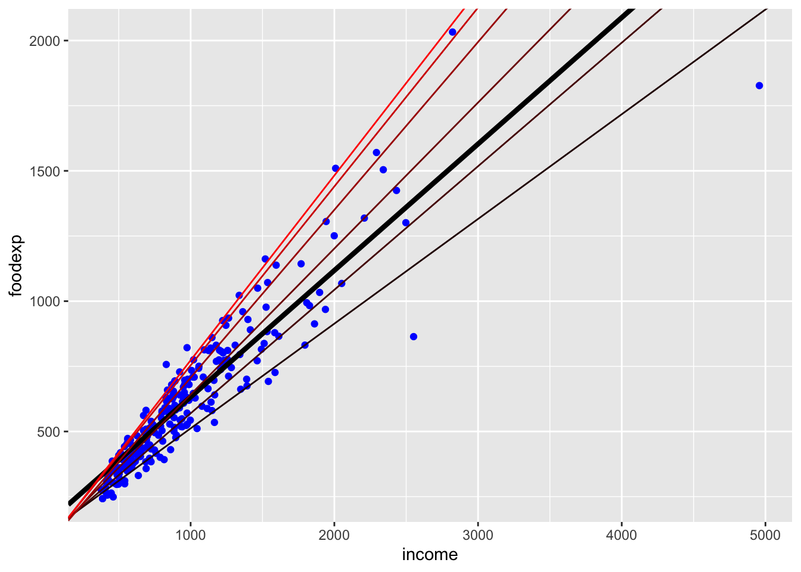

Quantile Regression
Introduction
Quantile regression is another variation on least squares . The loss is the tilted \(l_1\) function,
\[ \phi(u) = \tau\max(u,0) - (1-\tau)\max(-u,0) = \frac{1}{2}|u| + \left(\tau - \frac{1}{2}\right)u, \]
where \(\tau \in (0,1)\) specifies the quantile. The problem as before is to minimize the total residual loss. This model is commonly used in ecology, healthcare, and other fields where the mean alone is not enough to capture complex relationships between variables. CVXR allows us to create a function to represent the loss and integrate it seamlessly into the problem definition, as illustrated below.
Example
We will use an example from the quantreg package. The vignette provides an example of the estimation and plot.
suppressMessages(suppressWarnings(library(quantreg)))
data(engel)
library(ggplot2)
p <- ggplot(data = engel) +
geom_point(mapping = aes(x = income, y = foodexp), color = "blue")
taus <- c(0.1, 0.25, 0.5, 0.75, 0.90, 0.95)
fits <- data.frame(
coef(lm(foodexp ~ income, data = engel)),
sapply(taus, function(x) coef(rq(formula = foodexp ~ income, data = engel, tau = x))))
names(fits) <- c("OLS", sprintf("$\\tau_{%0.2f}$", taus))
nf <- ncol(fits)
colors <- colorRampPalette(colors = c("black", "red"))(nf)
p <- p + geom_abline(intercept = fits[1, 1], slope = fits[2, 1], color = colors[1], size = 1.5)
for (i in seq_len(nf)[-1]) {
p <- p + geom_abline(intercept = fits[1, i], slope = fits[2, i], color = colors[i])
}
p
The above plot shows the quantile regression fits for \(\tau = (0.1, 0.25, 0.5, 0.75, 0.90, 0.95)\). The OLS fit is the thick black line.
The following is a table of the estimates.
library(kableExtra)
knitr::kable(fits, format = "html", caption = "Fits from OLS and `quantreg`") %>%
kable_styling("striped") %>%
column_spec(1:8, background = "#ececec")| OLS | \(\tau_{0.10}\) | \(\tau_{0.25}\) | \(\tau_{0.50}\) | \(\tau_{0.75}\) | \(\tau_{0.90}\) | \(\tau_{0.95}\) | |
|---|---|---|---|---|---|---|---|
| (Intercept) | 147.4753885 | 110.1415742 | 95.4835396 | 81.4822474 | 62.3965855 | 67.3508721 | 64.1039632 |
| income | 0.4851784 | 0.4017658 | 0.4741032 | 0.5601806 | 0.6440141 | 0.6862995 | 0.7090685 |
The CVXR formulation follows. Note we make use of model.matrix to get the intercept column painlessly.
suppressMessages(suppressWarnings(library(CVXR)))
X <- model.matrix(foodexp ~ income, data = engel)
y <- matrix(engel[, "foodexp"], ncol = 1)
beta <- Variable(2)
quant_loss <- function(u, tau) { 0.5 * abs(u) + (tau - 0.5) * u }
solutions <- sapply(taus, function(tau) {
obj <- sum(quant_loss(y - X %*% beta, t = tau))
prob <- Problem(Minimize(obj))
solve(prob)$getValue(beta)
})
solutions <- data.frame(coef(lm(foodexp ~ income, data = engel)),
solutions)
names(fits) <- c("OLS", sprintf("$\\tau_{%0.2f}$", taus))Here is a table similar to the above with the OLS estimate added in for easy comparison.
knitr::kable(fits, format = "html", caption = "Fits from OLS and `CVXR`") %>%
kable_styling("striped") %>%
column_spec(1:8, background = "#ececec")| OLS | \(\tau_{0.10}\) | \(\tau_{0.25}\) | \(\tau_{0.50}\) | \(\tau_{0.75}\) | \(\tau_{0.90}\) | \(\tau_{0.95}\) | |
|---|---|---|---|---|---|---|---|
| (Intercept) | 147.4753885 | 110.1415742 | 95.4835396 | 81.4822474 | 62.3965855 | 67.3508721 | 64.1039632 |
| income | 0.4851784 | 0.4017658 | 0.4741032 | 0.5601806 | 0.6440141 | 0.6862995 | 0.7090685 |
The results match.
Session Info
sessionInfo()## R version 3.5.1 (2018-07-02)
## Platform: x86_64-apple-darwin17.7.0 (64-bit)
## Running under: macOS 10.14
##
## Matrix products: default
## BLAS/LAPACK: /usr/local/Cellar/openblas/0.3.3/lib/libopenblasp-r0.3.3.dylib
##
## locale:
## [1] en_US.UTF-8/en_US.UTF-8/en_US.UTF-8/C/en_US.UTF-8/en_US.UTF-8
##
## attached base packages:
## [1] stats graphics grDevices datasets utils methods base
##
## other attached packages:
## [1] CVXR_0.99-1 kableExtra_0.9.0 ggplot2_3.1.0 quantreg_5.36
## [5] SparseM_1.77
##
## loaded via a namespace (and not attached):
## [1] tidyselect_0.2.5 xfun_0.4 purrr_0.2.5
## [4] lattice_0.20-35 colorspace_1.3-2 htmltools_0.3.6
## [7] viridisLite_0.3.0 gmp_0.5-13.2 yaml_2.2.0
## [10] rlang_0.3.0.1 R.oo_1.22.0 pillar_1.3.0
## [13] Rmpfr_0.7-1 R.utils_2.7.0 glue_1.3.0
## [16] withr_2.1.2 bit64_0.9-7 bindrcpp_0.2.2
## [19] scs_1.1-1 bindr_0.1.1 plyr_1.8.4
## [22] stringr_1.3.1 MatrixModels_0.4-1 munsell_0.5.0
## [25] blogdown_0.9.2 gtable_0.2.0 R.methodsS3_1.7.1
## [28] rvest_0.3.2 evaluate_0.12 labeling_0.3
## [31] knitr_1.20 highr_0.7 Rcpp_0.12.19
## [34] readr_1.1.1 scales_1.0.0 backports_1.1.2
## [37] bit_1.1-14 hms_0.4.2 digest_0.6.18
## [40] stringi_1.2.4 bookdown_0.7 dplyr_0.7.7
## [43] grid_3.5.1 rprojroot_1.3-2 ECOSolveR_0.4
## [46] tools_3.5.1 magrittr_1.5 lazyeval_0.2.1
## [49] tibble_1.4.2 crayon_1.3.4 pkgconfig_2.0.2
## [52] Matrix_1.2-15 xml2_1.2.0 assertthat_0.2.0
## [55] rmarkdown_1.10 httr_1.3.1 rstudioapi_0.8
## [58] R6_2.3.0 compiler_3.5.1